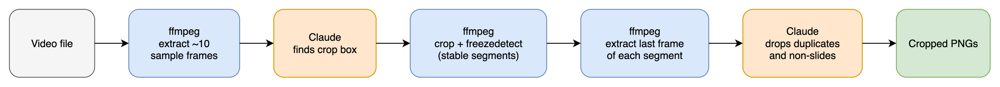
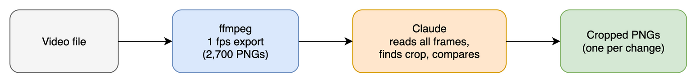
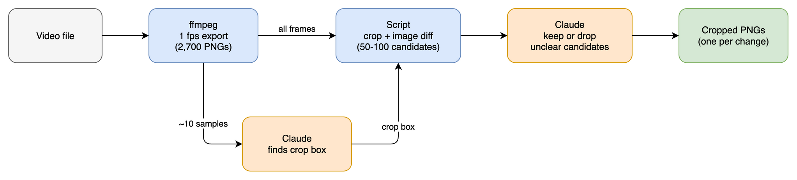
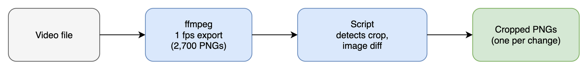

Decided: option B. ffmpeg does the comparison, so no 1 fps PNG export and no custom diff script.

Content: slide changes at 10 s and 20 s, a small bullet appears at 5 s, a speaker box moves outside the crop, noise on all frames. A real recording can give different results.
| ffmpeg filter | Result | Conclusion |
|---|---|---|
select=scene | Slide changes score 1.0. Bullet scores 0.017, noise scores 0.018. | Misses small changes |
crop + freezedetect | 4 segments, with boundaries at 5 s, 10 s and 20 s | Finds all changes |
cropdetect | Returns the full frame, 1280x720 | Cannot find the slide area |
| # | Topic | Recommended | Rejected |
|---|---|---|---|
| 2 | Change detection | crop + freezedetect | Scene score: misses small changes. PNG export + diff script: more code, no gain shown. |
| 3 | Frame to keep | Last frame of each stable segment | First frame: can catch a transition. |
| 4 | Slide builds (bullets appear one by one) | Keep only the final state | Keep each step: many near-duplicates. |
| 5 | Layout changes during the talk | One crop box per video. Claude drops frames with no slide and warns about other layouts. | One crop box per time range: add only if real videos need it. |
| 6 | Packaging | .claude/skills/video-slicer/SKILL.md + scripts/slice.py (standard library only, pytest) | Shell script: output parsing is hard to test. Installed package: not necessary. |
| 7 | Output | <video>-slices/0001_00-12-34.png next to the video | Added JSON index: no use case yet. |
| 8 | Tesseract OCR | Not in v1 | OCR compare: Claude already reads the candidates. |
Example: a 45-minute talk at 1 frame per second gives 2,700 frames. If Claude reads all of them, the estimated cost is 3.3M image tokens at 720p and 830k at 360p.
Tool or script Claude Output

This is the simplest to build. The cost is too high for each video.

The script compares pixels. Claude does only the work that needs judgement: it finds the crop box and decides unclear changes, such as an animation step or a new slide.

This needs no AI. Crop detection fails on layouts it does not expect, such as a picture-in-picture speaker or a changing stage view.
| Option | Accuracy on unusual layouts | Token cost | Speed | Repeatable |
|---|---|---|---|---|
| A: Claude reads every frame | High | Very high | Slow | No |
| B: Script filters, Claude decides | High | Low | Fast | Mostly |
| C: Script only | Low | None | Fastest | Yes |